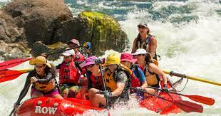
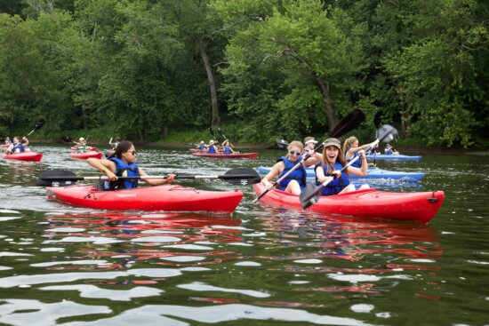

What We Offer!
 White water rafting is a fun but challenging out-door water activity. The main objective is to successfully float down a river in an inflatable tube. White water rafting is slightly harder than river rafting, as it tends to have rough water. It's best for experienced rafters or go-getter families.
River rafting is a relaxing and fun recreational activity, usually enjoyed with company. Our experience allows you to float down the river lazily with checkpoints set up throughout. You will come halfway down when you come across a small isle and a tire swing. Many families tend to stop and have a meal at that time.
Call 1-800-rafting to get a quote and reservation today! The best months are from May to June!